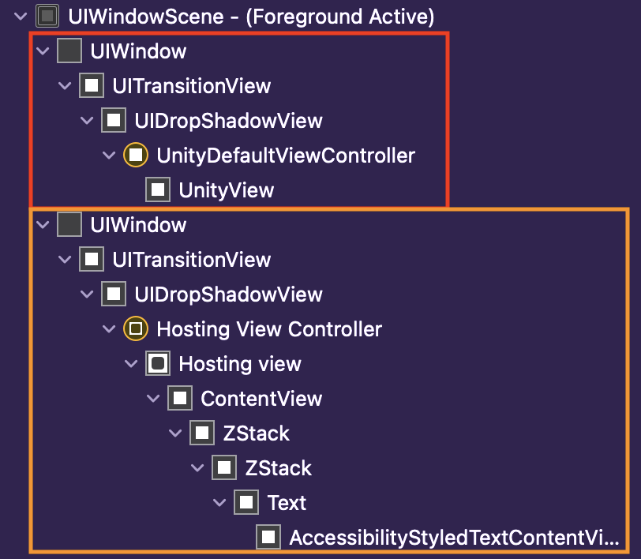

Unity 2021 - SwiftUI Integration, Revisited!
Earlier this year, I wrote a first blog post explaining how to integrate easily Unity in a SwiftUI application.
I am now back with a (much) better solution than what I introduced earlier.
Please note: I want to stress out that I am a graphics programmer and not a Swift developer. The solution proposed here is what I came up with after investigating our Unity+SwiftUI integration.
This solution might be wrong, but I am yet to find something that works better.
If you think there is a better way to do that, please reach out to me so I can update this blog post, as well as my own integration code :)
Demo#
I put together a sample you can use as-is. It’s available on here, my GitHub.
The README.md file is detailed and will guide you through the steps to run the demo.
SwiftUI + Unity: Problem#
If you try to run Unity the way the initial sample did, you might end up with the window created by Unity
on top of the UIWindow created by SwiftUI:

You can see above the Unity window in red, and the window for our UI in orange. As expected, the result is a screen with only the Unity view visible:

However, you are a smart programmer! You decide to change the z-ordering of the Unity window to be in the background. You figure out a way, and you think it’s really nice! (heuuu):
struct ContentView: View {
var body: some View {
ZStack {
Text("This text overlaps Unity!").onAppear {
let api = UnityBridge.getInstance()
api.show()
if let window = api.view?.window {
// Yeah, that's... hacky... but you know, when
// you are out of options, you do what you can :)
window.windowLevel = .normal - 10000.0
}
}
}
}
}
annnnnnnnnnnnnnd…. that doesn’t work :')
But again, you are a smart programmer and you are resourceful. SwiftUI views are wrapped into
a UIHostingController, and that the associated view isn’t transparent.
You have the perfect idea, why not go for another beautiful hack:
struct ContentView: View {
var body: some View {
ZStack {
Text("This text overlaps Unity!").onAppear {
let api = UnityBridge.getInstance()
api.show()
if let window = api.view?.window {
// Set Unity drawing order to a lower number.
window.windowLevel = .normal - 10000.0
// Updates the background of the UIHostingView.
let windowUI = UIApplication.shared.windows[1]
if let controller = windowUI.rootViewController {
controller.view.isOpaque = false
controller.view.backgroundColor = UIColor(
red: 0, green: 0, blue: 0, alpha: 0.0
)
}
}
}
}
}
}
Here, you are basically taking the window of our SwiftUI hierarchy, and changing the background of the root view to transparent.
But does that even work?
It works!
Wait… the cube is supposed to stop spinning when there is a touch event… Touch events aren’t forwarded to the Unity view!
Fortunately, there might be a clean way to do all of that. Let’s have a look together!
SwiftUI + Unity: Solution#
To sum up our issues:
- The
UIHostingControllerview isn’t transparent by default - Events aren’t sent to the Unity window
To fix those issues, we will need to generate our own UIHostingController and to
add it to a custom UIWindow instance. We will override the hitTest method of the UI window to allow events to go through it to reach the Unity window.
In order to easily customize the window, we will bring back the AppDelegate and SceneDelegate!
UIKit Lifecycle#
The idea is to modify the SceneDelegate class in to create the UIHostingController that makes
the bridge between UIKit and SwiftUI.
Delete previous ‘main’ entry point
Start by removing the main annotation from your App:
@main
struct sandboxApp: App {
var body: some Scene {
WindowGroup {
ContentView()
}
}
}
becomes
// Just remove it you aren't going to need it :)
// If you want to keep it as a view, simply remove the `@main` annotation.
Create the AppDelegate class
Create the SceneDelegate class
You should now expect the same result as what we got with our hacks:
Changing the app structure like that required a full rebuild for me.
If your
SceneDelegateisn’t triggered (and you connected it!), just try to delete the application and do a complete build.
Event Forwarding#
For the events, we will mark our UIHostingController’s view with a special tag (*identifier)
that will be used to know when the UI window should ignore an event or not.
Let’s have a look at the above screenshot. The red area represents our UIHostingController’s view.
The green area represents the normal UI views that will catch gestures. What we want is basically to
ignore the events when they are reaching the UIHostingController’s view.
Let’s create a custom UIWindow where we will implement this logic. Create a new class called UIWindowCustom:
Now, all we need to do is to use this custom window for our SwiftUI hierarchy. You will thus
need to replace the line (in the SceneDelegate class):
self.window = UIWindow(windowScene: windowScene)
by
self.window = UIWindowCustom(windowScene: windowScene)
In addition, you also need to tag the background view as a passthrough:
let vc = UIHostingController(rootView: ContentView())
...
// Tags the background UI view in order to let event flow
// to the Unity window.
vc.view.tag = UIWindowCustom.PassthroughTag
And voila!
I changed the text by a color picker for the demo in order to have a view with meaningful interactions.
- The cube stops spinning on the Unity side when a touch event is received
- The color picker is done on the SwiftUI side and the events are processed correctly
Improved Build#
We have seen how to fix our drawing and gesture issues, but we haven’t talked about smoothing our build workflow.
If you read the previous blog post, you must already be annoyed with something: Each time we make a new build, we have to manually update the visible of our bridging header and the target membership of the data folder.
This is okay if you build twice, but it’s absolutely not okay in any real world scenario.
We will fix that by using a BuildPostprocessor. Let’s create a file called AutoBuilder.cs:
The code:
- Sets the appropriate Swift Compiler flags
- Adds the ‘Data’ folder to the Unity target
- Sets the visibility of the communication header to
public
I also introduced a new file: UnityFramework.modulemap. This is used
to map #include to a module import. For more information about what
modulemaps are, please refer to the Clang LLVM documentation. With this file,
it’s now possible to easily use our NativeCallProxy in swift without a bridging header.
Because everything is automatically copied and setup during the Unity build, you should now remove the bridging header we created during the previous blog post. You need to:
- Remove the file
NativeCallProxy-Bridging-Header.h - Remove the header entry from the XCode target Build Settings Tab
That’s it!
With this code, you basically have an already setup build, ready to be used :)
From now on, each time you build your Unity project, you simply need to re-build your xcode project, isn’t that futuristic? 2022 is coming.
Improved Communication#
For the communication, I decided to make a trade-off between simplicity and performance.
Basically, I have two different kind of communications:
- JSON messaging
- Function pointers
Messaging: JSON#
For my use case, I have a good 99% of my API points that are called only one time or less per minute, with only a few kilobytes per messages.
Why would I bother with FFI and wrapping those APIs when I can just exchange simple JSON data?
On Unity’s side, I have a script that handles all my JSON APIs:
This is really simple, but gets the job done really nicely! This script basically reacts to JSON sent by the native side. Those JSON have a really simple structure:
{
// Used to know what action to perform when this message is received.
// For instance, the type could be:
// * `change-color` to change the color of the cube
// * `scale-mesh` to scale a mesh
//
// Anything your API support :)
"type": "message-identifier",
// Data associated with this message.
"data": {}
}
Function Pointers#
In the first version of this blog post, I showed how to directly call a function from the native side.
As a reminder, this was done by calling a native function and passing the Unity function pointer as an argument.
I still make good use of those for:
- Functions that exchange heavy data, such as:
- vertices
- image data
- etc…
- Functions that are called several times per frame
Choosing whether you should use function pointers or simple string messages will be on a per-feature basis.
Be really careful when calling using function pointers like that. You might need to synchronize the call to be sure that the user is performing an action at the appropriate lifecycle instant.
Swift Abstraction#
We don’t want other developers (or just ourselves!) to have to use our NativeCallProxy header as-is.
One of the improvement I made as well was to distribute a Swift safe and friendly API wrapper via the Unity build.
The API wrapper for this demo looks like:
Because it implements the NativeCallsProtocol, you can also directly
use it in the bridge file:
class UnityBridge:
UIResponder,
UIApplicationDelegate,
UnityFrameworkListener {
...
public let api: UnityAPI
internal override init() {
...
// The `UnityAPI` is a friendly communication point
// available to developers that want to communicate
// with the Unity side!
self.api = UnityAPI()
self.api.communicator = self
self.ufw.register(self)
FrameworkLibAPI.registerAPIforNativeCalls(self.api)
...
}
...
}
I like this method because:
- The message identifiers can be hidden from the developer
- The Swift wrapper can freely
- delay calls
- cache calls
- do any intermediary step between Unity and the develop
- We can expose method using Swift objects, like
UIColor, etc…
In addition, I like to have the API entirely wrapped in the Unity build instead of directly in the application. The exposed API is anyway intrinsic to the Unity build we are using.
Going Further#
Starting from Swift 5.5, the new method attributes async and await
are available.
What does it mean for us?
We will be able to improve even further the Unity - Swift communication.
Imagine the following use case:
- You send a message from the native side to Unity
- Unity performs an action
- Unity sends a response back
Such a scenario can be handled right now, but the Swift code will become quickly verbose and hard to maintain. You will end up with a lot of callbacks, nested on potentially multiple levels.
Add to the scenario a couple of calls you need to schedule in a particular order, and it becomes pain to manage!
With async andc await, writing asynchronous code and defining the order
of resolution will be a lot simpler. Simple idea to explore…
Conclusion#
You made it! Don’t forget that the entire code presented here is available in this repository.
I am fairly happy with the result I have now. It works well and nothing magical occurs in the view hierarchy behind my back.
As a sidenote, in my use case the communication is almost always one-sided: from native side to Unity. If you need more complex scenario with back-and-forth messaging, you might want to spend some time designing a better communication system.
Hopefully, this blog post is final and this solution can help you as well!